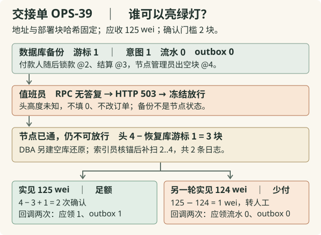

本页目录
继续暂停。 节点能应答，只说明现在能查；库里的扫描位置说明块 2、3、4 都没核进来。哪怕付款人出示的回执写着成功，也不能把这段空白当成订单已核销，更不能叫付款人重付。要补读原部署的记录，不是重新制造三笔交易。
只改扫描进度：现在库已把同一条链核到块 4。能做什么？可以核销这张单：在原部署的块 3 对到同一受益人、同一资产、足额 125 wei 的结算日志，4 − 3 + 1 = 2 次确认也已够，才可登记一条应领和一条待发通知。扫描追平本身不是收款证据，「待发」也不是「对方已收到通知」。
只想读懂交接判断，可以去第 40 课：让评委改一个条件重判。以下是选做事故演练。接手人不碰原作者的工作目录、不拿任何人的私钥；要用到第 38 课区分结算回执、业务流水和待发通知的判断。
先签收什么：交付包、部署、业务账是三件事
做过 Java 服务移交的人容易漏掉一项：同一个 URL、同一个链号并不能标识同一本账。127.0.0.1:18556 今天和明天都能回答 31337；重起 Anvil 却会得到全新的随机角色和部署。接收方要能分别回答三问：哪份源码？哪次部署？这个订单依哪条日志核销？
| 要签收的物件 | 必须独立核对 | 不能由它推出 |
|---|---|---|
| 源码包、SHA-256、工具和授权清单 | 接手人解到空目录，从本机缓存/受信上游重新编译；实际使用的源码和配置的字节摘要 | 有源码 ≠ 有权公开分发；摘要 ≠ 签发人身份 |
地址簿 $WORK/release/manifest.json |
链号、合约地址、部署块高/哈希、创建交易、runtime 摘要、构造的收款方和截止时间；用 handoff.py 从节点重验 |
ABI 文件、浏览器截图或一个地址不证明代码仍在规范链上 |
| 单库 dump、意图与事故附件 | 快照时间、库名、游标高/哈希、应收资产和金额、确认阈值；还原到另一个新库再读 | 没有订单意图就不知道替谁核销；数据库备份不是节点备份，也不是外部发货流水 |


本课从无预付的新部署和空库开始，只启动 M05 订单 API，不开自动处理界面，便于逐步冻结和观察。第 38 课的对账台和独立付款端也在交付包里：另一次新部署按包内 labs/payment-desk.md 操作；第 40 课按 labs/hackathon.md 调评委工具。三者共用同一套 M04 合约与 M05 索引、订单和 outbox。只做本课不必启动 18038 或 18039。完整课程站的部署、索引恢复、订单事务解释原理，不是包内运行依赖。
交班的第一道门：所有权不等于把秘密交给乙方
| 角色 | 本实验能做什么 | 明确不能当成什么权限 |
|---|---|---|
| 付款人 A | 自己确认合约、受益人、金额和截止时间；仅 A 调 lock()、截止前 settle()；锁定且到期才有退款分支 |
付款私钥不进交付包，不发给运维；核销员不能代签或改一笔已执行的结算 |
| 受益人 B | 持有自己的签名权；Settled 使 B 获得 credit；只有相应的应领人才能成功 withdraw() 领自己的款 |
125 wei 在合约中可领 ≠ B 钱包已收 125 wei。本课不调用领取 |
| 索引/订单服务 | eth_chainId、读块/回执/日志；索引在本地数据库写游标、事实；订单 POST 在同一事务写提示、业务流水和 outbox |
链上只读不等于数据库只读。 不调用 eth_send*、不挖块，不从回调自报金额造收据。只看结果者用 HTTP GET，不给数据库账号或 Docker 权限 |
| 发布/节点管理员；DBA | 前者保管部署标识、演练时暂停/唤醒自有节点、出测试空块；后者备份、校验、另建恢复库、切唯一服务 | 停节点和建库不是对账员日常权限。不得靠重置链、覆盖旧库、手调游标或删 outbox 解除告警 |
| 财务复核/履约人 | 按单重查本次头和日志；恢复点前后的外部动作另与接收端流水勾兑，必要时批准补偿 | ENTITLEMENT_RECORDED 是一次「应领已记」的通知意图，不是已发送、可发货或已退款 |
本地教学链的随机账户由 Anvil 临时解锁；能访问解锁节点的其他进程也可能发交易。--unlocked 只出现在付款人的回环教学命令中。M05 用公开的实验数据库角色 course，没有生产级鉴权或最小授权隔离；不要把这个实验端口、Docker socket 或台面转发给别人。生产交接须由权利人自己用其签名设备/多签接管角色并验证权限，使旧授权失效；只交公开地址和授权记录，索引另配只能读的 RPC 身份、业务表按岗位分权。此合约的 payer/payee 是 immutable，改清单不能换受益人。若要换人，应另行授权新部署与新意图，保留旧合约合法领取或退款路径；不能假装旧款已迁移。
第一步：原作者制包，接手人在空目录解包
从仓库根目录执行。给制包器一个尚不存在的输出文件。不取 HEAD、不递归打包、不装入 .git、target/、__pycache__、日志、dump、.env、钱包或 $HOME；白名单只含人工审过的课文、图、配置和源码。白名单不能防止误把秘密写进一个允许的文件，发出前仍需审查内容。
SHIP=$(mktemp -d)
python3 labs/m10/ops/bundle.py "$SHIP/m10-source.tar" > "$SHIP/m10-source.sha256"
cat "$SHIP/m10-source.sha256"
接收方只拿获准交付的 tar，并通过另一个可信渠道确认上述摘要。下方 SHIP 是接收方收到 tar 和已核准摘要的目录，不是原仓库。若两者同由未知人提供，验出来相等也不要执行。以下实验用 Bash；每个新终端都 cd 到打印的 KIT 绝对路径。包里的 START-HERE.txt 是入口，不需要 Git 或生成的 HTML。
(cd "$SHIP" && shasum -a 256 -c m10-source.sha256) || exit 1
KIT=$(mktemp -d); tar -xf "$SHIP/m10-source.tar" -C "$KIT" || exit 1
cd "$KIT" && shasum -a 256 -c SHA256SUMS || exit 1
printf 'KIT=%s\n' "$KIT"; cat START-HERE.txt
在这里按工具与许可清单准备 Python 3.11、JDK 21、Maven 3.9、Docker/PostgreSQL 17.5、Forge/Cast/Anvil 1.7.1 与 solc 0.8.28。首次可从受信上游取构件；真正隔网前须预热接收方平台的工具、镜像和 Maven 仓库。用 bash labs/m05/build.sh（预热后可加 -o）在新目录编译。旧 classpath.txt、Docker 凭证和真实数据库密码均不是依赖交付方案。
第二步：在付款之前取能恢复的备份
A／节点管理员在 KIT 根目录执行。把打印出的 WORK 绝对路径交给 B、C；HANDOFF ... state=0 后保持前台，直到签收结束才按回车。全程不用 --reset 或 --settle-wei。
export PATH="${XDG_CACHE_HOME:-$HOME/.cache}/chain-course/m04/bin:$PATH"
export FOUNDRY_SOLC="${XDG_CACHE_HOME:-$HOME/.cache}/chain-course/m04/bin/solc"
unset ANVIL
umask 077; WORK=$(mktemp -d); printf 'WORK=%s\n' "$WORK"
python3 labs/m04/deployment.py --out "$WORK/release" --hold
B／DBA 在自己的终端 cd 到同一 KIT。若本机没有本课程专用容器，运行 bash labs/m05/db.sh start；若已运行且已核验标签 chain.course.lab=m05，复用容器、不清其他人的库。口令是脚本中的公开本地夹具，不可带到实际项目。以下命令最后将 OrderApp 留在前台，看到它监听 127.0.0.1:18020 再继续。
printf '粘贴 A 的 WORK 绝对路径：'; IFS= read -r WORK
python3 labs/m10/ops/incident.py prepare "$WORK"
交接驱动先让原 Scan 锚定部署，再用 OrderIntent create OPS-39 native:31337 125 2 建意图，随后 db.sh dump 调 pg_dump -Fc。$WORK/ops/backup.json 写下两个随机库名（源库、将要新建的恢复库）、dump 摘要、部署与游标哈希。before-payment.dump 的恢复点应为 height=1, orders=1, logs=0, bookings=0, outbox=0。单库一致快照含意图、表、索引和约束，不含集群角色、Anvil、源码、节点故障后的订单或外部履约流水。
第三步：让真实付款留下三个待扫的块，再制造断连
C／临时付款人在包根目录用 Bash 执行。没有启动扫描循环。先看 API 返回 WAIT_SETTLED；把清单的公开角色与运行时读数对上，再自行确认下列两笔不同交易：第一笔从 A 向合约锁 PAID，第二笔由 A 结算，不再附款。cast send 的超时不是允许重发；先用原交易哈希/发送方 nonce 查清，不知道结果就停止演练。只有本地节点管理员执行最后的空块命令。
set -euo pipefail
printf '粘贴 A 的 WORK 绝对路径：'; IFS= read -r WORK
export PATH="${XDG_CACHE_HOME:-$HOME/.cache}/chain-course/m04/bin:$PATH"
M="$WORK/release/manifest.json"; O="$WORK/ops"; RPC=http://127.0.0.1:18556
API=http://127.0.0.1:18020/orders/OPS-39
curl --noproxy '*' -fsS "$API" > "$O/unpaid.json"
python3 labs/m04/handoff.py "$M" > "$O/before-pay.json"
PAYER=$(python3 -c 'import json,sys;print(json.load(open(sys.argv[1]))["payer"])' "$O/before-pay.json")
ESCROW=$(python3 -c 'import json,sys;print(json.load(open(sys.argv[1]))["contractAddress"])' "$O/before-pay.json")
PAID=125
printf '本人确认本地 A=%s 托管=%s 锁入 %s wei\n' "$PAYER" "$ESCROW" "$PAID"
cast send --rpc-url "$RPC" --unlocked --from "$PAYER" "$ESCROW" 'lock()' --value "$PAID" --json > "$O/lock.json"
cast send --rpc-url "$RPC" --unlocked --from "$PAYER" "$ESCROW" 'settle()' --json > "$O/settle.json"
cast rpc --rpc-url "$RPC" evm_mine
curl --noproxy '*' -fsS "$API" > "$O/lag.json"; cat "$O/lag.json"
付款后和下一步暂停期间都不要再送交易/挖块/扫描。预期 lag.json 给出 headHeight=4, cursorHeight=1, lagBlocks=3, decision=HOLD_LAG。缺口不是三笔钱：块 2 记 Locked，块 3 记 Settled，块 4 无合约日志。两条日志是同一笔价值的不同阶段。
C 现在切回演练主持人角色（不是付款功能），或让节点管理员在同一主机的同一系统用户执行断连工具。该工具核对真实部署、该单的部署锚、监听者的 UID/可执行名及父进程 deployment.py --hold，只给本轮 Anvil 发 SIGSTOP。内核可继续接受 TCP 连接，但 eth_chainId 在 1 秒内读不到任何 HTTP 应答；M05 在自己的 RPC 调用超时后返回业务 503。这是应用层确实不可用，不是关掉 Java、改 SQL、返回假 JSON 或重建链。不要在共享、容器外、远程或非自有节点执行。
python3 labs/m10/ops/outage.py "$M" OPS-39 "$O/outage.json"
脚本在故障中 POST outage-39 要求真实回查；应见 ALERT HTTP 503 HOLD_UNAVAILABLE mayNotify=False。告警的动作是停止核销/外发，不把超时当 0 wei，不改订单，也不再请用户付款。即便提示记录先尝试 INSERT，事务没提交就不能留下半张单。脚本在 finally 对同一 PID 发 SIGCONT，重验清单及同一头哈希并再次 GET，签发 RPC_RESTORED_SAME_HEAD。应仍是 HOLD_LAG，不是绿灯。工具若遭强杀，管理员先按打印的 PID 重新以 lsof/ps 核实仍为本节点，再 kill -CONT 该 PID；不按进程名批量发信号。未完整记录的报告 INCOMPLETE 不得验收。
第四步：切空库，补历史，证明重放不是第二笔收入
B 用 Ctrl-C 只停旧 OrderApp。不要停 A，也不要让两个实例分别对源库和恢复库接单。然后仍在 B 执行：
python3 labs/m10/ops/incident.py restore "$WORK"
驱动要求事故与当前部署/当前头相符、原库仍在备份点（包括 hints=0：故障中那次回调未落库），再比对可信清单中的 dump 摘要。db.sh restore 在不存在的库名上 createdb，以 pg_restore -1 -e 恢复；同名存在或内容不匹配就停，不覆盖旧账。restored.json 是实读新库的结果；新服务连的必须是这里的 database。源库保留，只作取证。若第一份恢复未成功，先隔离该新库、检查错误与备份来源，不能把未完成的库切上线。
C／索引与财务复核：等 B 的新服务就绪，拿同一份 WORK 目录执行下面的核验。先比较输出中的 headHeight 和 cursorHeight，再读扫描区间和日志数。若看到 2..4 matched=2，意思是三个块里有两条相关记录，不是两次付款：Locked@2 说明进了托管，只有 Settled@3 指明谁应领。从后者核对受益人和整数金额，再按块 4 的链头数确认，才轮到订单服务写账。重放后则看新增了几条，不要数输出了几次同一句成功消息。
python3 labs/m10/ops/incident.py audit "$WORK"
| 检查点 | 预期可观察结果（不是本轮实测值） | 谁能据此解什么锁 |
|---|---|---|
| 还原后初查 | 同一 deployHash；头 4 / 游标 1，HOLD_LAG |
DBA 只确认库可读，没有核销依据 |
Recover 核验分支并调用 Scan |
UNCHANGED height=1 指旧游标所在分支没变；随后 PAGE 2..4 matched=2 inserted=2 cursor=4 |
索引员确认追平。核销只读 Settled@3；4−3+1=2 次本地确认达标，不是公网最终性 |
先 GET、再 POST retry-39 |
足额时 READY_TO_BOOK → BOOKED_AT_HEAD；newHint=true。短付时始终 HOLD_AMOUNT |
同一事务写流水与 ENTITLEMENT_RECORDED；少 1 wei 也不写，不靠多等一块抹平 |
强制 Scan 2 重扫并再 POST 同键 |
matched=2 inserted=0；newHint=false，bookingEvidence 不变 |
以数据库快照数记录，不把两次 HTTP 200 数成两份收入 |
| 独立复核原件 | 评委读端按交易哈希从活节点回查，核对规范块、logIndex、事件、B 与 wei；audit.json 里保留报告 |
足额时 bookings=1, outbox=1, hints=1，应领 125 wei；证明的不是外部通知送达或 B 提现成功 |
关键有两把钥匙：扫描器按 (chainId, blockHash, txHash, logIndex) 存日志，原样再读不会再插一条。业务端又有按订单/证据的唯一约束，用事务把应领流水与 outbox 一起提交。只给回调键去重不够：换一个提示键还是同一张单；回调不能决定金额。数据库内幂等也不等于邮件/货运系统 exactly-once，真实消费者还需自己的业务幂等键、发送前重新核对与接收方对账。
事故卡：损失窗口、升级与保留
RPO 是业务可接受的数据损失窗口，不是备份任务的运行间隔。假设约定 RPO 为 15 分钟，09:56 隔离事故时，最近一次已验证可恢复的快照在 09:45，那么有 11 分钟的链下写入未必在 dump 里；这次恢复点符合目标，但不等于已经丢了 11 分钟的订单，更不能据此计算丢款金额。若 09:45 的快照已坏，要从上一个可恢复点重算。规范链历史可从受信的同一节点补，期间新录的报价、订单归属、人工已发货记录却无法靠 eth_getLogs 恢复：要另有可重放的订单日志或数据库基础备份与连续 WAL，以及外部接收方的履约记录。本实验在付款前已备份意图，不向任何外部系统发送。
| 信号/时限（下列为本工单的演练规则） | 值班动作与解除条件 |
|---|---|
| 活订单任一次 RPC 超时、503 或部署锚不符 | 立即关业务放行；记录最后可信头、游标、订单、UTC 与响应。503 也可能来自数据库，须用独立读探针定位；部署锚不符交发布人隔离，不自动换 RPC 或换链 |
RPC 已通但 head − cursor > 0 或相同高度哈希不同 |
保持挂起；前者补扫、后者按原 Recover 寻共同祖先。缺部署锚、节点无足够历史或旧凭据不再规范，人工调查，不能重写历史流水 |
| 值班目标：从首次告警到新库查账恢复 ≤30 分钟 | 用 outage.json.alertAt 与 audit.json.reviewedAt 计算实际恢复时长，与目标比较；超时叫 DBA/业务负责人，不降低确认门槛。pauseSeconds 只是进程暂停时长，不是 RTO |
| 下班交接 | 记录原/新库名、dump 摘要、头/游标/证据四元组、差额、流水/outbox 数与复核人。与链外系统对不平就交红单，不宣告「全系统已恢复」 |
保留策略（本地合成练习，不是客户默认法律期限）。 将 release/manifest.json、包摘要、工具版本、ops/backup.json、outage.json、restored.json、audit.json、两笔公开测试回执列为复核附件；受限工单保存 30 天，到期由资料负责人销毁并记下清理日期。dump 另存于仅 DBA 可读的受控位置，加密备份、7 天轮换，演练完成后清理临时还原库；应用故障日志只保留 7 天，记录错误类型/时间和合成订单号，不记请求体、真实地址画像或鉴权数据。合同另有期限、审计冻结或删除请求时先走审批。umask 077 不等于备份加密。未核对脱敏与授权不把整个 $WORK 放进参赛附件，更不把数据库、工具缓存、私钥、助记词、RPC 凭据或客户数据装进源码包。
可以撤回的是链下切流、暂停通知、从可信快照恢复到另库、重新索引；已经对外发出的消息或货物需补偿流程。不能用 SQL 回滚已执行的链上 lock/settle/withdraw，也不能把关掉临时节点叫做退款。签收后 B 停服务，先留批准的附件，A 最后按回车销毁临时节点。仅当已确认整台教学容器无人使用且所需库都已另存，才 bash labs/m05/db.sh stop；其数据在 tmpfs，停止即消失。
独立作业：把「系统恢复」与「可以核销」拆开签字
让另一位工程师仅拿 tar、可信摘要和工具前提，从新的空目录、新 WORK、空库和新部署完整走一轮。不改订单 125 wei / 2 次确认，只将付款步骤的 PAID=125 换成 PAID=124。先在纸上回答：RPC 停顿时可否断言欠 125？恢复且追平后欠多少？亲自复核 outage.json、audit.json 与原始结算回执后，提交两行签字：值班人签服务恢复，财务签是否核销。
判据：断连期间 503、金额未知；回到同一部署/头后仍需补三块；Settled(B,124) 与意图同资产同收款方，125−124=1 wei，两次本地确认仍 HOLD_AMOUNT，mayNotifyAsOfHead=false。重放新增 0，最终 bookings=0, outbox=0, hints=1。不要把 B 的 124 wei 应领权写成零，也不要把没有业务流水写成「链上没发生付款」。两位签字人结论不同才正确。
核验原文
- PostgreSQL 17：pg_dump 定义单库一致快照及全局对象边界；pg_restore 说明自定义归档、单事务及不可信备份风险。
- Ethereum Execution APIs：按块读取、交易与回执；M04 实际合约区分结算应领与提款事件。
- M05 订单表的唯一键与外键、同一事务内的核销实现；依赖与上游许可出处。